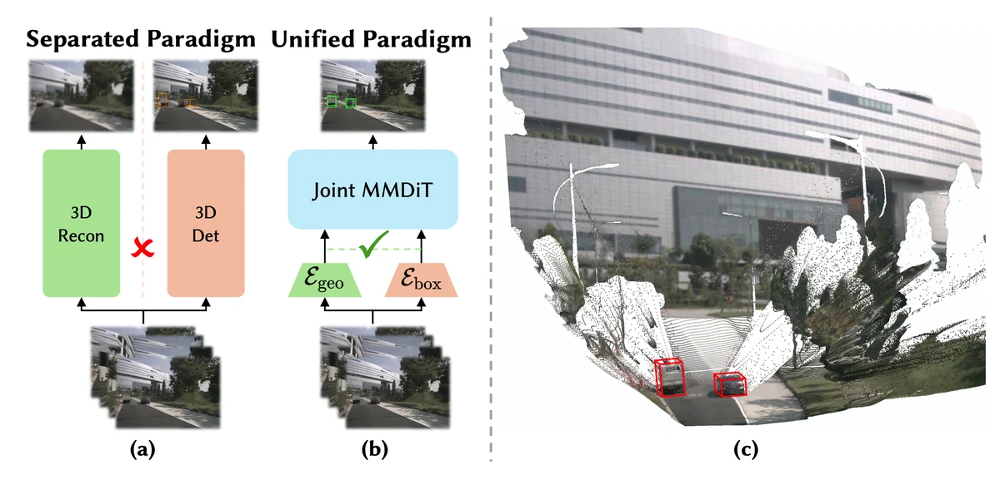
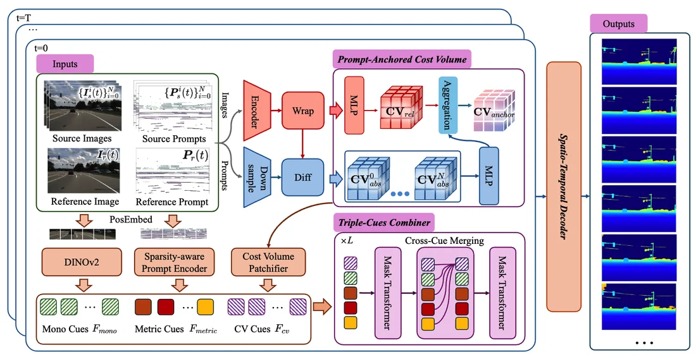
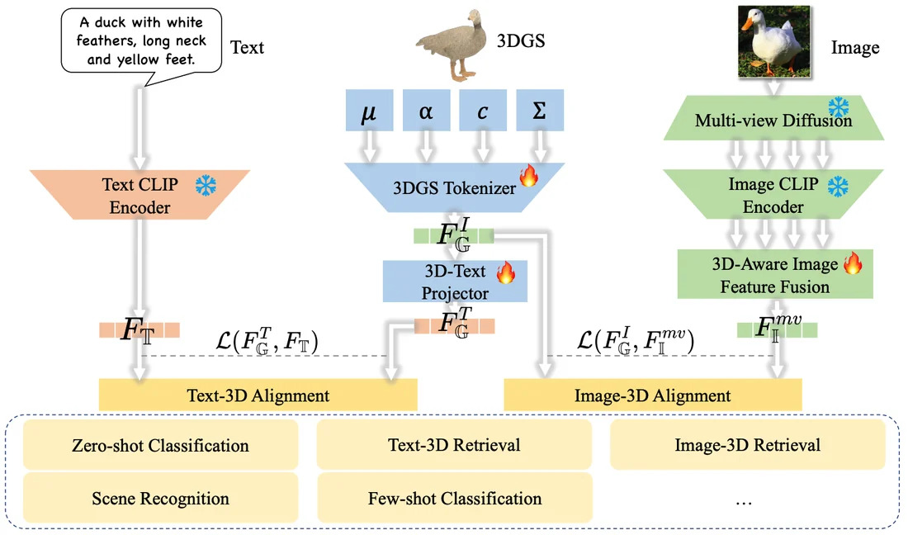
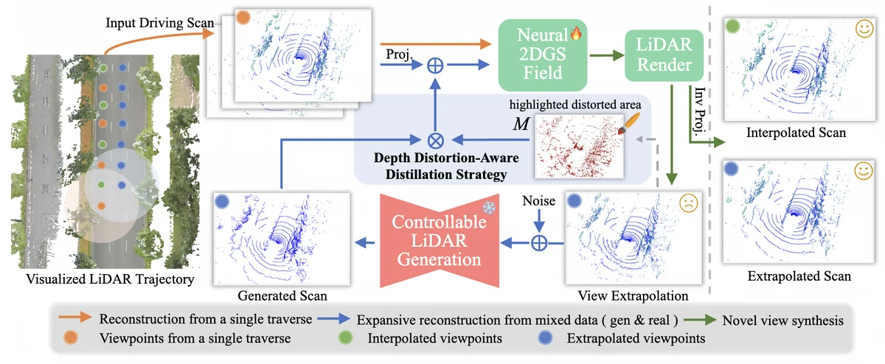
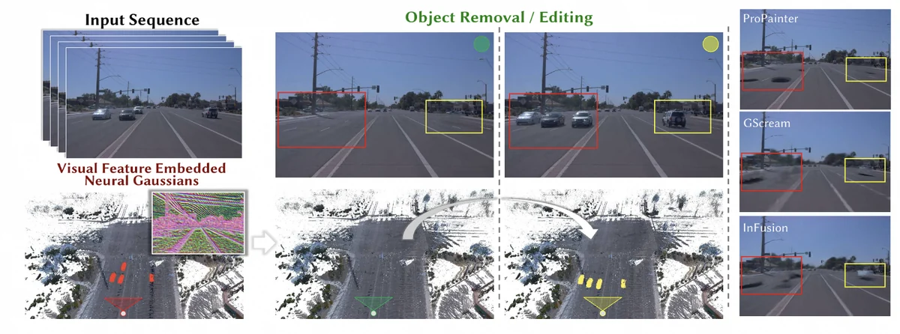
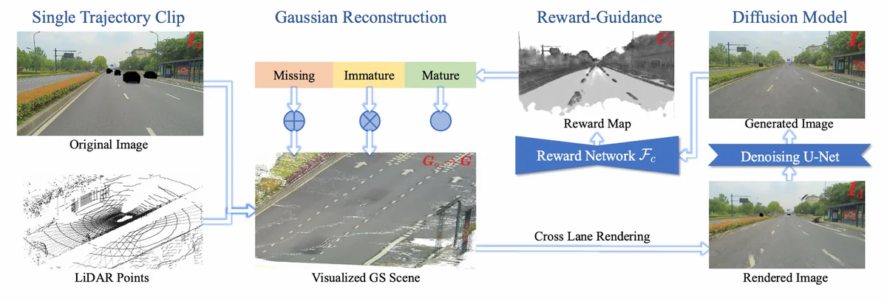
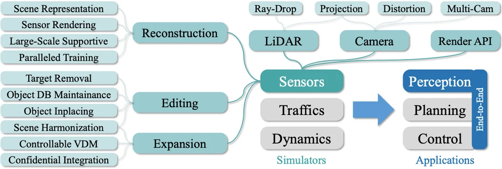
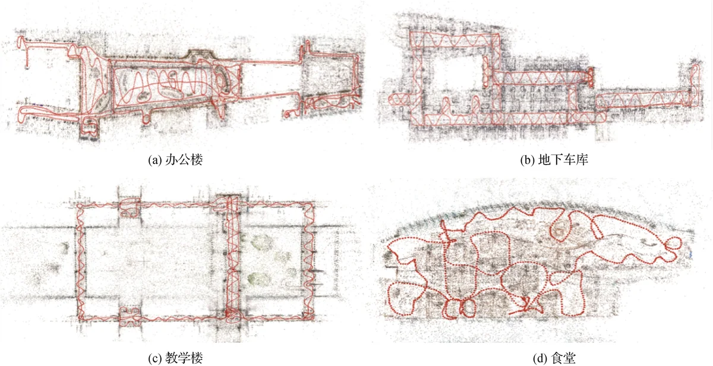

Jiarun Liu 刘佳润
I work on autonomous driving research at NIO Inc. Previously, I was an algorithm engineer at Cainiao, Alibaba Group.
I received my M.S. from the ZJU3DV group, State Key Lab of CAD&CG, Zhejiang University, advised by Prof. Guofeng Zhang. My interests span 3D vision, generative and world models, autonomous driving, and embodied AI.
- 3D Reconstruction
- Gaussian Splatting
- World Models
- Generative Models
Research
Publications
Recent work on 3D scene representation, reconstruction, generation, and simulation for intelligent driving.






Industrial-Grade Sensor Simulation via Gaussian Splatting: A Modular Framework for Scalable Editing and Full-Stack Validation
* Equal contribution

Background
Experience
Industry research and academic training at the intersection of computer vision and autonomous systems.
Work
-
2026.01 — PRESENT Senior Algorithm Engineer · NIO Inc.
Assisted and Intelligent Driving Department · Shanghai
-
2025.04 — 2025.12 Algorithm Engineer · Cainiao, Alibaba Group
Unmanned Vehicle Department · Hangzhou
-
2024.06 — 2025.03 Research Intern · Cainiao, Alibaba Group
Unmanned Vehicle Department · Hangzhou
-
2023.03 — 2024.05 Research Intern · SenseTime
Digital World Department · Hangzhou
Education
-
M.S. in Software Engineering
State Key Lab of CAD&CG, Zhejiang University · 2022–2025 -
B.Eng. in Digital Media
College of Computer Science, Zhejiang University · 2018–2022
Selected awards
- Outstanding Graduate at ZJU
- Tianzhou Chen Scholarship
- Yongping Scholarship